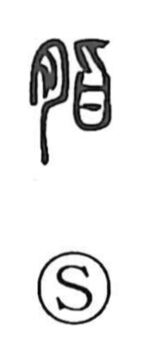

脂

Kun: abura | On: shi
fat ・ animal fat ・ grease
Explanation
A phono-semantic character formed with 月, the meat/flesh element, and 旨 as the phonetic. Shirakawa explains 旨 as a graph depicting a small meat knife cutting within a vessel, and by extension meaning “tasty, delicious.” Set beside the flesh radical, the character evokes richly flavored meat; since what makes meat delicious is its fat, the sense narrowed to “fat.” Thus 脂 names the fat within the flesh. In compounds like 脂膏, the term as a whole refers to animal fats, with 脂 indicating the fat marbled in the meat and 膏 denoting the fat of the internal organs.